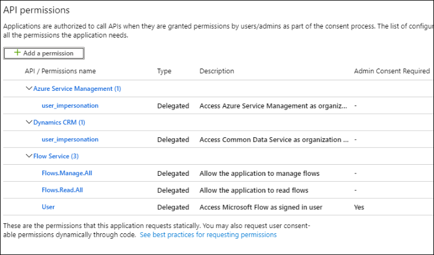
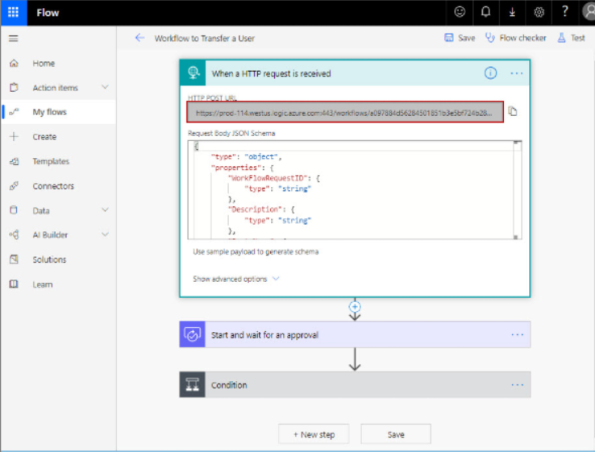
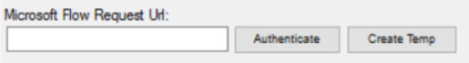

Overview
This article explains how to trigger a Microsoft Flow (MS Flow) from Netwrix Directory Manager (formerly GroupID). The goal is to automate user provisioning by linking user creation in Directory Manager to a corresponding SharePoint site access flow based on department information.
By integrating Directory Manager workflows with MS Flow, administrators can ensure that when a user is created and assigned a department, a flow is automatically triggered to grant them access to their department’s SharePoint site. When the MS Flow is approved, the linked Directory Manager workflow is also approved automatically.
Prerequisites
The Directory Manager application in Azure must have the following permissions for MS Flow:

Instructions
Follow the steps below to link a MS Flow to a Directory Manager Workflow:
- In Netwrix Directory Manager Management Console, go to the Identity Stores node.
- Double-click the required identity store to open its properties.
-
On the Workflow tab, click Microsoft Flow and
configure the following:
- Org Code: The unique name for the MS Flow environment.
- Region: The location of your MS Flow environment.
- Directory Manager Server: The name or IP of your Directory Manager server.
- ClientID: The application ID of the Directory Manager app registered in Azure.
- Click OK to save changes.
- Log into the MS Flow portal and open the flow you want to link.
- Generate a request URL for the MS Flow. 
- In the Directory Manager Console, go back to the Workflow tab of the identity store properties.
- Select the workflow to link (e.g., Create User) and click Edit.
- In the Edit Workflow Route dialog box, paste the MS Flow request URL into the Microsoft Flow Request URL field.
-
Click Authenticate and provide identity store credentials.

NOTE: To quickly define a flow in MS Flow, click Create Temp to create a basic template and connect it.
- Click OK to finalize the link between the Directory Manager workflow and MS Flow.
Now, when a user is created in Directory Manager Self-Service and assigned a department, it will trigger the Create User workflow. That workflow will trigger the MS Flow to grant access to the department’s SharePoint site. Approval of the MS Flow will automatically approve the Directory Manager workflow.
Validation Checklist
- Confirm on the Self-Service portal that the user has been created.
- Navigate to SharePoint and verify that the user has access to the appropriate department site.